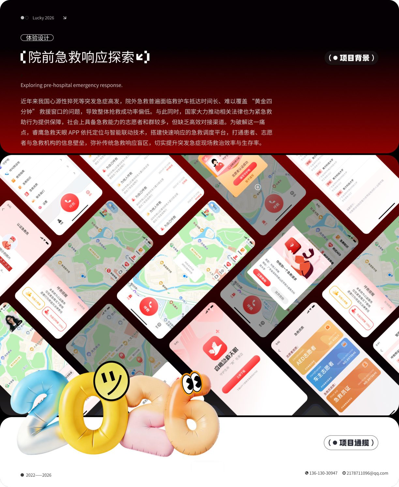
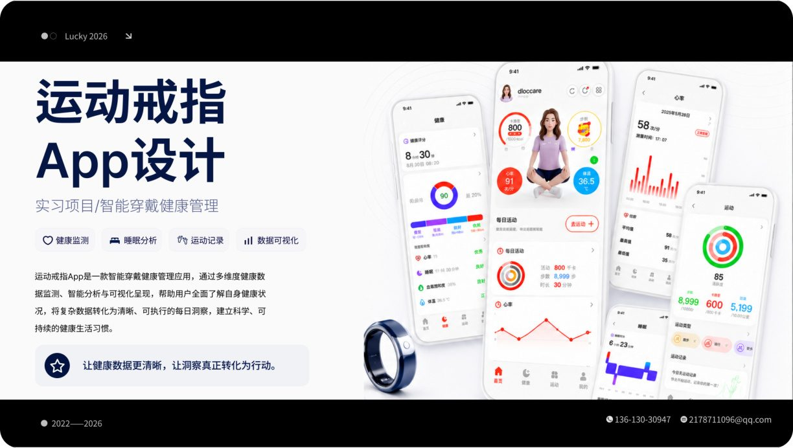
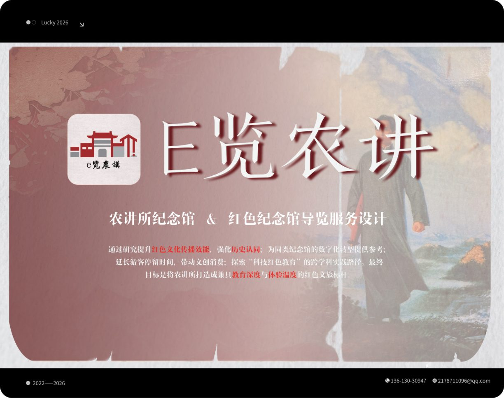
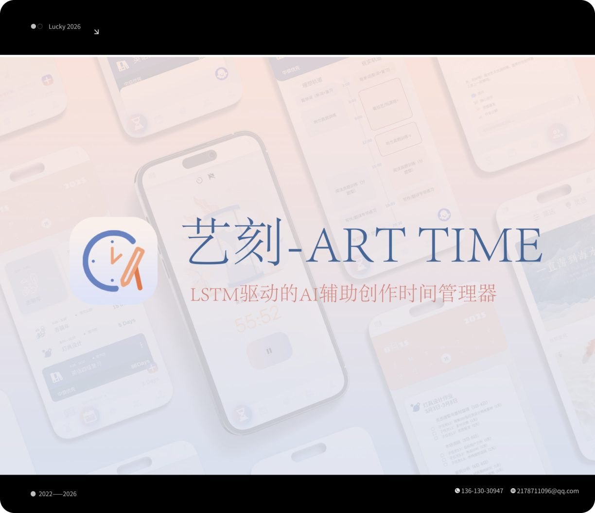
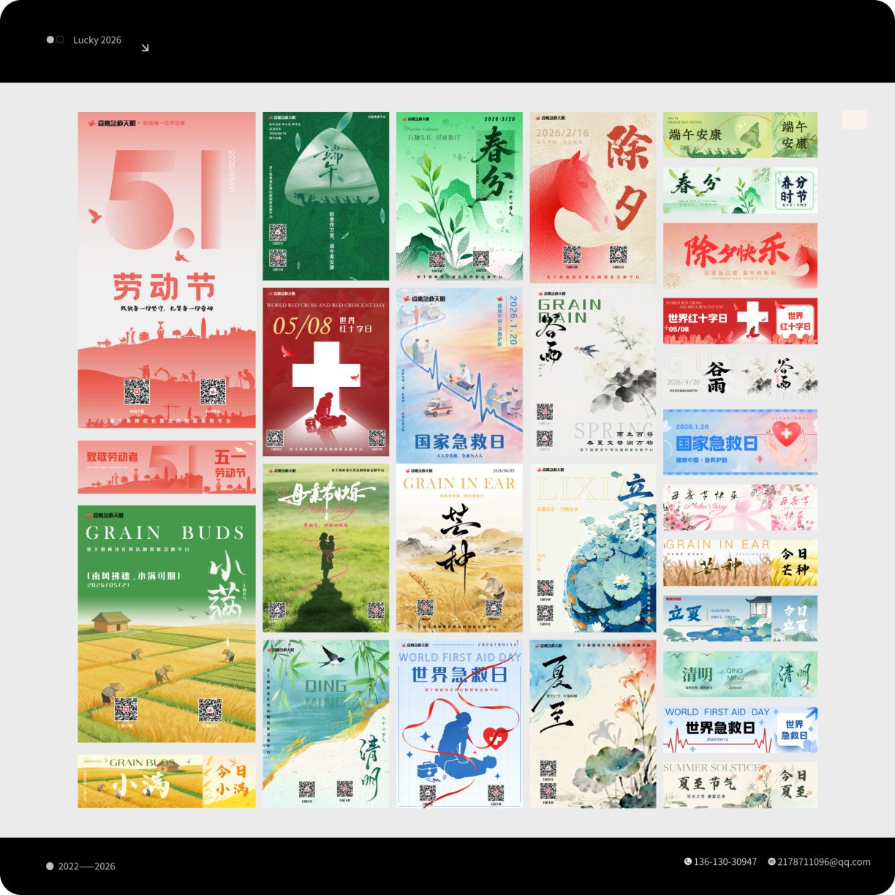
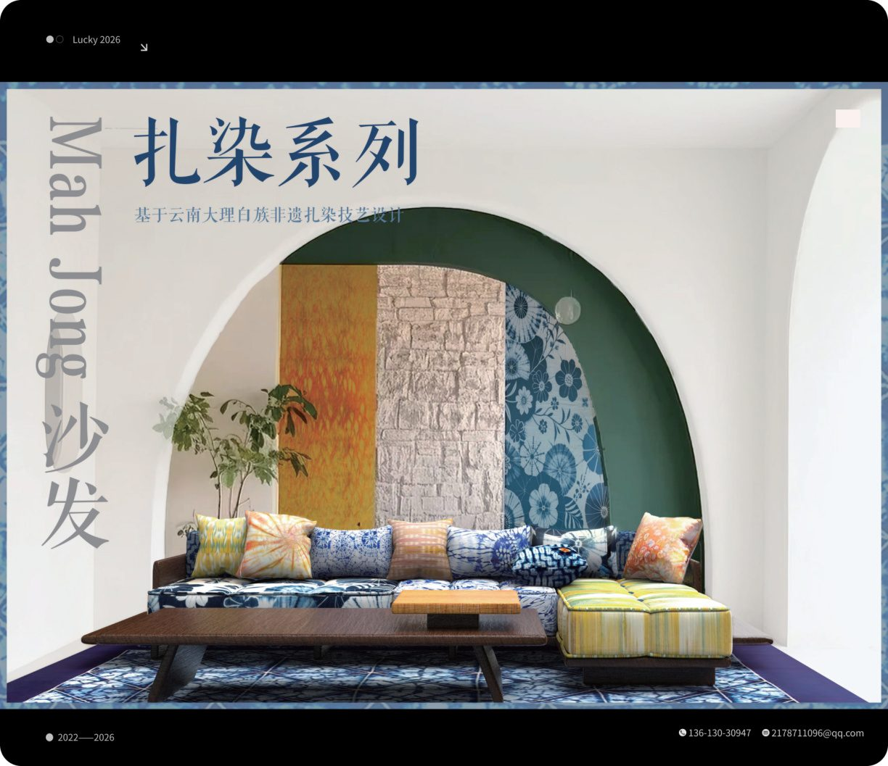
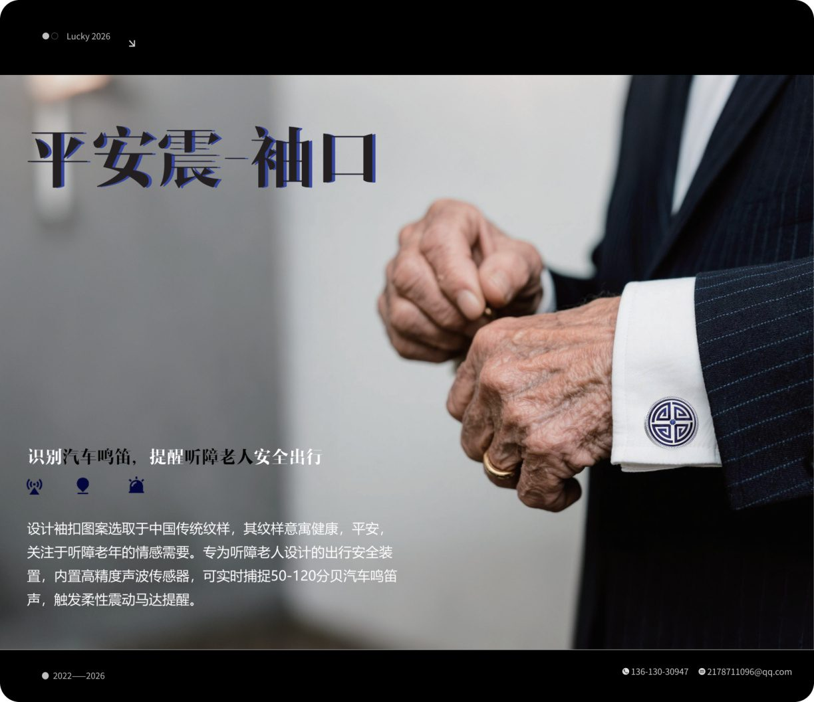

01 / Research
调研与问题发现
分析项目背景、用户需求和使用场景，明确设计目标，并提炼核心痛点与机会点。
我关注UI界面设计、视觉层级、品牌表达与数字体验。这里收录了我的实习项目、课程作品、产品设计、平面视觉与个人创意探索，记录我从用户研究、信息架构、界面设计到最终视觉输出的完整设计过程。
这里整理了我的实习 UI、在校项目、平面视觉与产品建模作品。内容涵盖移动端界面、数字化服务体验、校园视觉设计与产品表达，呈现我从问题分析、功能规划到视觉落地的完整设计过程。
Design Process
我的设计过程通常从用户场景和项目背景出发，通过调研分析、信息架构、功能规划与视觉规范，逐步完成界面和产品方案的表达。
分析项目背景、用户需求和使用场景，明确设计目标，并提炼核心痛点与机会点。
梳理用户路径、页面结构和功能层级，通过信息架构、流程图和服务蓝图建立清晰的设计逻辑。
结合字体、色彩、图标、组件和版式规范，完成高保真界面、产品效果图与最终作品展示。
Selected Works
这里整理了我的实习 UI、在校项目、平面视觉与建模设计。每个项目都围绕具体使用场景展开，呈现从调研分析、功能规划到视觉表达的完整过程。

面向景区突发医疗救助场景，优化一键呼救、智能匹配、实时导航与全场救援支持流程，通过高辨识度入口与状态可视化提升紧急场景下的操作效率。

围绕智能戒指的数据采集与健康管理场景，设计睡眠、心率、运动、活动记录与数据分析页面，强调关键指标可读性与日常使用的轻量化体验。

围绕农讲所纪念馆的参观场景，整合预约参观、AR 导览、语音讲解、数字藏品与文创商城，提升红色文化传播的互动性与参观体验。

针对艺术专业学生的非线性创作流程，设计结合 AI 任务拆解、灵感周期预测与时间可视化的创作管理工具，帮助用户规划创作节奏。

整理活动海报、校园宣传物料、邀请函与文创视觉练习，关注字体层级、色彩情绪、版式节奏与信息传播效率。

以 Mah Jong 模块化沙发为基础，结合云南大理白族扎染工艺进行图案与材质再设计，探索非遗元素在现代家具产品中的视觉转译与应用。

面向听障老人的日常出行安全问题，设计可识别汽车鸣笛并通过震动提醒用户的袖口式装置，在功能安全与情感关怀之间建立连接。
Contact
如果你对我的作品感兴趣，或想进一步了解我的 UI 设计、产品设计与视觉项目，欢迎通过邮件联系我。期待与你交流关于设计、体验与创意表达的更多可能。
2178711096@qq.com